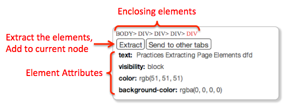

Tutorial
Introduction
Welcome to Tandem! Tandem is a programming environment on the Web. It enables you to modify or add extra functionality to existing web pages. Here are some examples that enhancements can do:
- Hide unwanted information such as advertisements.
- Collect information from multiple web pages, and create custom reports.
- Add custom filters to any list.
- Convert plain data tables into interactive calculators.
 .
.
Basic Concepts & UI components
Let's begin with the terminology of Tandem programming.- An Enhancement is an application created using Tandem. An enhancement consists of many nodes. The nodes are connected to each other, executed one-by-one, and passing values around.
- Nodes are placed on the grid UI. Each node contains an operation, a list of values, and is connected to one or multiple input nodes.
- Operation is what this node will do when being triggered. For example, the operation above multiplies the numbers of input 1 and input 2, and updates the node's value. Parameters such as input 1, /, input 2 can be directly modified. You can drag new operations from the Actions panel.
- Input nodes connect the node to other preceding nodes. It can be either relative position (e.g. _left, _right, _above, _below) or node ID (e.g. wOkhj), which you can set by pressing and clicking the input node.
- Values can be set by either
- executing the operation,
- typing in the text box,
- or extracting elements from the current Web page.
- The Actions panel shows the operations that you can create nodes with.
Tandem provides over 30 operations. In the tools panel, you can drag them to the grid. Four colors of the operations represent different roles they have.

- Pick operations select / find / load information from the Web.
- Transform operations do value-to-value conversion.
- Apply operations customize existing Web pages by hiding / changing / attaching new elements.
- Control operations manage program structure such as event handling.

Option 1. Drag an operation from the actions panel. Option 2. Double-click an empty part of the grid to create an empty node. As the node does not have any operation or values, you should choose an action in the actions panel.
Connecting Nodes
Connections among nodes not just pass the data but also trigger the following nodes. For instance, in the figure below, the order of executing the nodes is represented with red lines.- (0) triggers (1) to set the original numbers.
- (2) and (3) are executed to get the count and the sum.
- After all, (4) calculates the average using values from (2) and (3).
- All the nodes to run must be connected to the main Trigger node.
- A node awaits until all its preceding nodes are executed.
- Trigger nodes awaits until specific event has occured.

Element Inspector
Most Tandem enhancements need to deal with existing elements (e.g. tables, lists, and images) on the Web. Watch the following video first.The steps are
- Select an empty node.
- Click any page element that you want to extract. Element Inspector panel will show up. The top line ("BODY> DIV> DIV> DIV> DIV") shows HTML tags of the elements enclosing the current selection. You can hover over them and click one to switch selection. 
- Click [Extract] button to extract the element and add to the current node values.
- If you want to extract more than one elements, extract couple more elements.
- Check the Actions panel. Click [Extract Element] task looks like below.

Try In the practice window, extract all the rows of the table. How did you extract rows instead of columns?
Two methods
Direct specification
Tandem also allows traditional programming style. Users can directly choose the operation that they need, and manually set the parameters.
Generator
Tandem has an advanced support called the generator that suggests actions for current context.
Imagine a situation that you know what to do but have no idea of how to do it. Instead of searching in the documentation, the generator allows users to express intent with input nodes and current node's values. It is like saying
I have a fresh egg, butter, and coconut [input values].Let's learn how to get suggested actions in Tandem.
How can I bake delicious macaroons [desired outcome] with them?
Using a single input node

Using multiple input nodes
Some actions require multiple input nodes (e.g. egg and butter). It takes several steps as below.
Tasks
You have learned the very basic usage and two methods for creating operations in Tandem. Let's learn five types of common tasks.We prepared several problems for each task type. First, you will try to solve them without any instruction. After the first trial, we will be given some instruction and examples. Then you will try the task again.
1.Calculating Numbers
Try the task before seeing the instruction and examples. How did you do the task? Let's learn how to use the two methods for the task.

Repeat the task. This time you decide the most efficient method for each problem.
2.Extracting Information
Try the task before seeing the instruction and examples. How did you do the task? Let's learn how to use the two methods for the task.Repeat the task. This time you decide the most efficient method for each problem.
3.Filtering items
Try the task before seeing the instruction and examples. How did you do the task? Let's learn how to use the two methods for the task.Repeat the task. This time you decide the most efficient method for each problem.
4.Attaching Elements
Try the task before seeing the instruction and examples. How did you do the task? Let's learn how to use the two methods for the task.Repeat the task. This time you decide the most efficient method for each problem.
5.Modifying Elements
Try the task before seeing the instruction and examples. How did you do the task? Let's learn how to use the two methods for the task.Repeat the task. This time you decide the most efficient method for each problem.